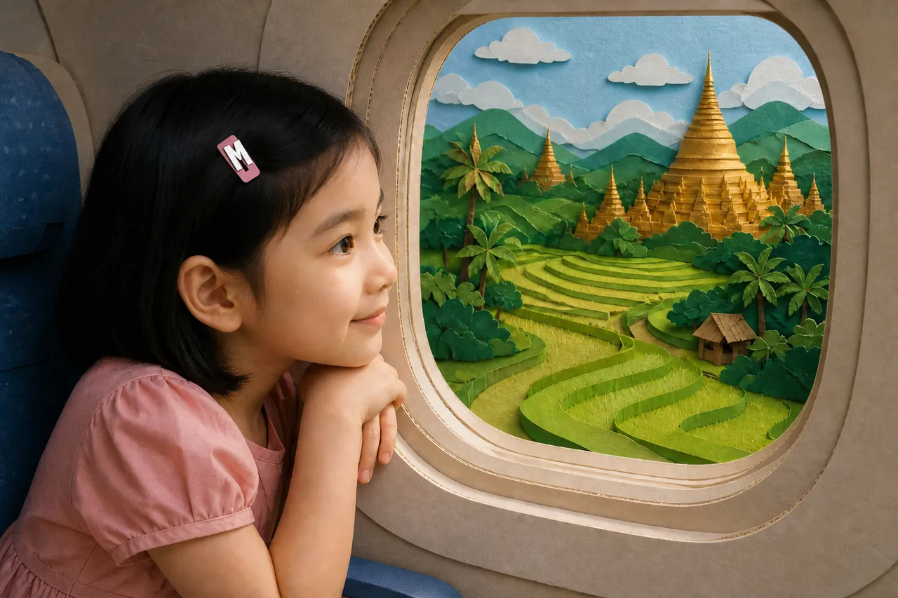
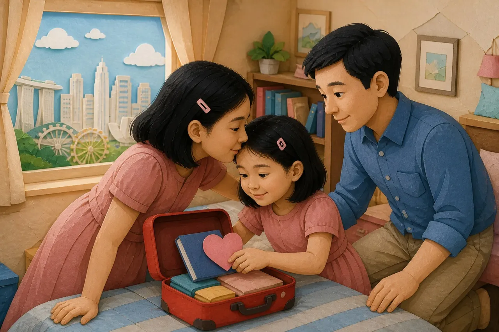
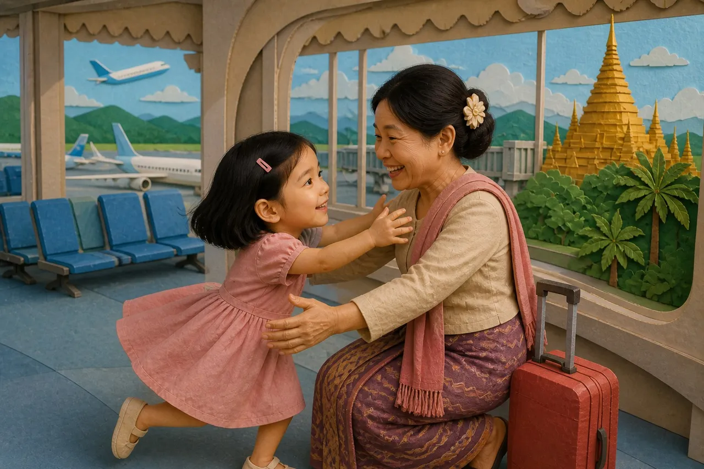

Chapter 1 · The Window Above Myanmar

That night Mudra opened her notebook on her lap inside the airport waiting room. The page was soft under her pencil, and the lights above glowed like tiny lanterns. She listened to the voices around her, the rustle of boarding passes, and the faint scent of jasmine from the plant by the gate. She wrote slowly: Day one. I am seven. I came from Singapore. I said Mingalarpar. I am a little scared. I am a little brave. Outside, frogs sang, and Myanmar felt real at last.
The flight had been both loud and quiet in the same breath. Singapore was a city of glass and steel where people hurried in clean shoes and spoke in polite English. In the airplane, Mudra pressed her nose to the cool window and watched the ocean change into a pattern of green and brown below. She told herself the sky was a white road leading to the country in her grandmother’s stories. In the photographs at home, Myanmar had been only a patchwork of wooden houses, rice fields, and smiling faces on Grandma’s phone. Now it was no longer only a picture — it was a place she was leaving Singapore to find.
At the gate, before she could think too much, Grandma appeared. Her hairpin bobbed like a flower as she waved, and her voice called, "Mudra!" as if that sound could cross oceans by itself. Grandma’s arms were warm and smelling of rain and soap and jasmine. She held the little red suitcase like it was a small treasure. "Welcome home," she said in English first, then smiled and added, "Mingalarpar." Mudra kept that first time she heard the word like a spark in her heart.

She practiced Mingalarpar until the sound felt soft and bright in her mouth. Mingalarpar. Mingalarpar. It was not only a hello — it was a wish for goodness that opened doors. Grandma showed her how to say thank you and please too. She said, "Come," and "Yes," and Mudra repeated them as if she were learning the steps to a dance. Each new word made the place feel a little more like something she could carry with her.
The road from the airport to the village was new and full of surprises. The highway narrowed into a smaller path lined with banana trees and wooden houses with curved roofs. Rice fields opened like green water under the evening light. The water in the little canals shone like mirrors. The driver pointed and said a word in Myanmar. Grandma told her, "လယ်ကွင်း — rice field." Mudra said it slowly, "lel-kwin," tasting each sound. She felt proud that she could now name the fields that had looked far away in pictures.
When they reached the house, the yard was full of people she had missed without knowing it. Mother stirred a pot, and the steam smelled sweet. Father swept the path and looked up with kind eyes. Sister hung Mudra’s travel dress on a line so the wrinkles could rest. Baby clapped sticky hands and laughed. Mudra walked through the door and said Mingalarpar to everyone she met. She bowed a little to Grandfather and whispered, "Mingalarpar, Grandfather." His smile folded around her like a warm blanket.

After dinner, with the house quiet and the fan turning slowly above, Mudra opened her notebook again. Outside the window, the frogs were still singing. She wrote: Today I learned words that felt like promises. I am a little scared because the sounds are new and my ears are full of them. I am a little brave because my heart is listening. I am here now, and Grandma is here now, and the house smells like rice and tea. When I say Mingalarpar, I am not only saying hello. I am saying I am ready to learn Myanmar properly. I will keep this place in my notebook so I can remember it forever.
She closed the notebook and placed it carefully inside her red suitcase. The cover was still warm from her hand. The frogs outside sang on, and inside she felt the first page of a new story settling into her hands. It was a story she could read again and again, one word at a time, until Myanmar felt as familiar as Singapore and every new sound felt like a friend.
Mingalarpar is more than hello — it wishes goodness. Myanmar children who live abroad, like Mudra in Singapore, often hear it first when they visit grandparents.